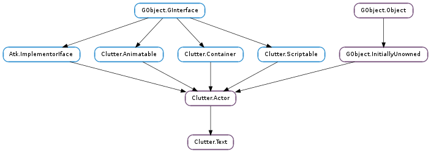

| Name | Type | Flags | Description |
|---|---|---|---|
| activatable | bool | r/w | Whether pressing return causes the activate signal to be emitted |
| attributes | Pango.AttrList | r/w | A list of style attributes to apply to the contents of the actor |
| buffer | Clutter.TextBuffer | r/w | The buffer for the text |
| color | Clutter.Color | r/w | Color of the font used by the text |
| cursor-color | Clutter.Color | r/w | Cursor Color |
| cursor-color-set | bool | r | Whether the cursor color has been set |
| cursor-position | int | r/w | The cursor position |
| cursor-size | int | r/w | The width of the cursor, in pixels |
| cursor-visible | bool | r/w | Whether the input cursor is visible |
| editable | bool | r/w | Whether the text is editable |
| ellipsize | Pango.EllipsizeMode | r/w | The preferred place to ellipsize the string |
| font-description | Pango.FontDescription | r/w | The font description to be used |
| font-name | str | r/w | The font to be used by the text |
| justify | bool | r/w | Whether the text should be justified |
| line-alignment | Pango.Alignment | r/w | The preferred alignment for the string, for multi-line text |
| line-wrap | bool | r/w | If set, wrap the lines if the text becomes too wide |
| line-wrap-mode | Pango.WrapMode | r/w | Control how line-wrapping is done |
| max-length | int | r/w | Maximum length of the text inside the actor |
| password-char | int | r/w | If non-zero, use this character to display the actor’s contents |
| selectable | bool | r/w | Whether the text is selectable |
| selected-text-color | Clutter.Color | r/w | Selected Text Color |
| selected-text-color-set | bool | r | Whether the selected text color has been set |
| selection-bound | int | r/w | The cursor position of the other end of the selection |
| selection-color | Clutter.Color | r/w | Selection Color |
| selection-color-set | bool | r | Whether the selection color has been set |
| single-line-mode | bool | r/w | Whether the text should be a single line |
| text | str | r/w | The text to render |
| use-markup | bool | r/w | Whether or not the text includes Pango markup |
| Name | Parameters | Return | Description |
|---|---|---|---|
| activate | The ::activate signal is emitted each time the actor is ‘activated’ by the user, normally by pressing the ‘Enter’ key. The signal is emitted only if Clutter.Text :activatable is set to True. | ||
| cursor-event | Clutter.Geometry | The ::cursor-event signal is emitted whenever the cursor position changes inside a Clutter.Text actor. Inside geometry it is stored the current position and size of the cursor, relative to the actor itself. | |
| delete-text | int, int | This signal is emitted when text is deleted from the actor by the user. It is emitted before self text changes. | |
| insert-text | str, int, int | This signal is emitted when text is inserted into the actor by the user. It is emitted before self text changes. | |
| text-changed | The ::text-changed signal is emitted after actor ‘s text changes |
| Name | Type | Access |
|---|---|---|
| parent_instance | Clutter.Actor | r |
Bases: Clutter.Actor, Clutter.Container
The Clutter.Text struct contains only private data.
| Returns: | the newly created Clutter.Text actor |
|---|---|
| Return type: | Clutter.Actor |
Creates a new Clutter.Text actor. This actor can be used to display and edit text.
| Parameters: |
|
|---|---|
| Returns: | the newly created Clutter.Text actor |
| Return type: |
Creates a new Clutter.Text actor, using font_name as the font description; text will be used to set the contents of the actor; and color will be used as the color to render text.
This function is equivalent to calling Clutter.Text.new (), Clutter.Text.set_font_name (), Clutter.Text.set_text () and Clutter.Text.set_color ().
| Parameters: | buffer (Clutter.TextBuffer) – The buffer to use for the new Clutter.Text. |
|---|---|
| Returns: | a new Clutter.Text |
| Return type: | Clutter.Actor |
Creates a new entry with the specified text buffer.
| Parameters: | |
|---|---|
| Returns: | the newly created Clutter.Text actor |
| Return type: |
Creates a new Clutter.Text actor, using font_name as the font description; text will be used to set the contents of the actor.
This function is equivalent to calling Clutter.Text.new (), Clutter.Text.set_font_name (), and Clutter.Text.set_text ().
| Returns: | True if the ::activate signal has been emitted, and False otherwise |
|---|---|
| Return type: | bool |
The ::activate signal is emitted each time the actor is ‘activated’ by the user, normally by pressing the ‘Enter’ key. The signal is emitted only if Clutter.Text :activatable is set to True.
| Parameters: |
|
|---|---|
| Return type: |
Retrieves the position of the character at the given coordinates.
Return: the position of the character
| Parameters: | n_chars (int) – the number of characters to delete |
|---|
Deletes n_chars inside a Clutter.Text actor, starting from the current cursor position.
Somewhat awkwardly, the cursor position is decremented by the same number of characters you’ve deleted.
| Returns: | True if text was deleted or if the text actor is empty, and False otherwise |
|---|---|
| Return type: | bool |
Deletes the currently selected text
This function is only useful in subclasses of Clutter.Text
| Parameters: |
|---|
Deletes the text inside a Clutter.Text actor between start_pos and end_pos.
The starting and ending positions are expressed in characters, not in bytes.
| Returns: | True if the actor is activatable |
|---|---|
| Return type: | bool |
Retrieves whether a Clutter.Text is activatable or not.
| Returns: | the attribute list, or None if none was set. The returned value is owned by the Clutter.Text and should not be unreferenced. |
|---|---|
| Return type: | Pango.AttrList |
Gets the attribute list that was set on the Clutter.Text actor Clutter.Text.set_attributes (), if any.
| Returns: | A #GtkEntryBuffer object. |
|---|---|
| Return type: | Clutter.TextBuffer |
Get the Clutter.TextBuffer object which holds the text for this widget.
| Parameters: | |
|---|---|
| Returns: | a newly allocated string with the contents of the text actor between the specified positions. Use GLib.free () to free the resources when done |
| Return type: |
Retrieves the contents of the Clutter.Text actor between start_pos and end_pos, but not including end_pos.
The positions are specified in characters, not in bytes.
| Return type: | color: Clutter.Color |
|---|
Retrieves the text color as set by Clutter.Text.set_color ().
| Return type: | color: Clutter.Color |
|---|
Retrieves the color of the cursor of a Clutter.Text actor.
| Returns: | the cursor position, in characters |
|---|---|
| Return type: | int |
Retrieves the cursor position.
| Returns: | the size of the cursor, in pixels |
|---|---|
| Return type: | int |
Retrieves the size of the cursor of a Clutter.Text actor.
| Returns: | True if the cursor is visible |
|---|---|
| Return type: | bool |
Retrieves whether the cursor of a Clutter.Text actor is visible.
| Returns: | True if the actor is editable |
|---|---|
| Return type: | bool |
Retrieves whether a Clutter.Text is editable or not.
| Returns: | Pango.EllipsizeMode |
|---|---|
| Return type: | Pango.EllipsizeMode |
Returns the ellipsizing position of a Clutter.Text actor, as set by Clutter.Text.set_ellipsize ().
| Returns: | a Pango.FontDescription. The returned value is owned by the Clutter.Text actor and it should not be modified or freed |
|---|---|
| Return type: | Pango.FontDescription |
Retrieves the Pango.FontDescription used by self
| Returns: | a string containing the font name. The returned string is owned by the Clutter.Text actor and should not be modified or freed |
|---|---|
| Return type: | str |
Retrieves the font name as set by Clutter.Text.set_font_name ().
| Returns: | True if the text should be justified |
|---|---|
| Return type: | bool |
Retrieves whether the Clutter.Text actor should justify its contents on both margins.
| Returns: | a Pango.Layout. The returned object is owned by the Clutter.Text actor and should not be modified or freed |
|---|---|
| Return type: | Pango.Layout |
Retrieves the current Pango.Layout used by a Clutter.Text actor.
| Return type: | x: int, y: int |
|---|
Obtains the coordinates where the Clutter.Text will draw the Pango.Layout representing the text.
| Returns: | a Pango.Alignment |
|---|---|
| Return type: | Pango.Alignment |
Retrieves the alignment of a Clutter.Text, as set by Clutter.Text.set_line_alignment ().
| Returns: | True if the Clutter.Text actor should wrap its contents |
|---|---|
| Return type: | bool |
Retrieves the value set using Clutter.Text.set_line_wrap ().
| Returns: | the wrap mode used by the Clutter.Text |
|---|---|
| Return type: | Pango.WrapMode |
Retrieves the line wrap mode used by the Clutter.Text actor.
See Clutter.Text.set_line_wrap_mode ().
| Returns: | the maximum number of characters. |
|---|---|
| Return type: | int |
Gets the maximum length of text that can be set into a text actor.
See Clutter.Text.set_max_length ().
| Returns: | a Unicode character or 0 if the password character is not set |
|---|---|
| Return type: | unicode |
Retrieves the character to use in place of the actual text as set by Clutter.Text.set_password_char ().
| Returns: | True if the actor is selectable |
|---|---|
| Return type: | bool |
Retrieves whether a Clutter.Text is selectable or not.
| Return type: | color: Clutter.Color |
|---|
Retrieves the color of selected text of a Clutter.Text actor.
| Returns: | a newly allocated string containing the currently selected text, or None. Use GLib.free () to free the returned string. |
|---|---|
| Return type: | str |
Retrieves the currently selected text.
| Returns: | the position of the other end of the selection |
|---|---|
| Return type: | int |
Retrieves the other end of the selection of a Clutter.Text actor, in characters from the current cursor position.
| Return type: | color: Clutter.Color |
|---|
Retrieves the color of the selection of a Clutter.Text actor.
| Returns: | True if the Clutter.Text actor is in single line mode |
|---|---|
| Return type: | bool |
Retrieves whether the Clutter.Text actor is in single line mode.
| Returns: | the contents of the actor. The returned string is owned by the Clutter.Text actor and should never be modified or freed |
|---|---|
| Return type: | str |
Retrieves a pointer to the current contents of a Clutter.Text actor.
If you need a copy of the contents for manipulating, either use GLib.strdup () on the returned string, or use:
copy = clutter_text_get_chars (text, 0, -1);
Which will return a newly allocated string.
If the Clutter.Text actor is empty, this function will return an empty string, and not None.
| Returns: | True if the contents will be parsed for markup |
|---|---|
| Return type: | bool |
Retrieves whether the contents of the Clutter.Text actor should be parsed for the Pango text markup.
| Parameters: |
|---|
Inserts text into a Clutter.Actor at the given position.
If position is a negative number, the text will be appended at the end of the current contents of the Clutter.Text.
The position is expressed in characters, not in bytes.
| Parameters: | wc (unicode) – a Unicode character |
|---|
Inserts wc at the current cursor position of a Clutter.Text actor.
| Parameters: | position (int) – position in characters |
|---|---|
| Returns: | True if the conversion was successful |
| Return type: | bool, x: float, y: float, line_height: float |
Retrieves the coordinates of the given position.
| Parameters: | activatable (bool) – whether the Clutter.Text actor should be activatable |
|---|
Sets whether a Clutter.Text actor should be activatable.
An activatable Clutter.Text actor will emit the Clutter.Text ::activate signal whenever the ‘Enter’ (or ‘Return’) key is pressed; if it is not activatable, a new line will be appended to the current content.
An activatable Clutter.Text must also be set as editable using Clutter.Text.set_editable ().
| Parameters: | attrs (Pango.AttrList or None) – a Pango.AttrList or None to unset the attributes |
|---|
Sets the attributes list that are going to be applied to the Clutter.Text contents.
The Clutter.Text actor will take a reference on the Pango.AttrList passed to this function.
| Parameters: | buffer (Clutter.TextBuffer) – a Clutter.TextBuffer |
|---|
Set the Clutter.TextBuffer object which holds the text for this widget.
| Parameters: | color (Clutter.Color) – a Clutter.Color |
|---|
Sets the color of the contents of a Clutter.Text actor.
The overall opacity of the Clutter.Text actor will be the result of the alpha value of color and the composited opacity of the actor itself on the scenegraph, as returned by Clutter.Actor.get_paint_opacity ().
| Parameters: | color (Clutter.Color or None) – the color of the cursor, or None to unset it |
|---|
Sets the color of the cursor of a Clutter.Text actor.
If color is None, the cursor color will be the same as the text color.
| Parameters: | position (int) – the new cursor position, in characters |
|---|
Sets the cursor of a Clutter.Text actor at position.
The position is expressed in characters, not in bytes.
| Parameters: | size (int) – the size of the cursor, in pixels, or -1 to use the default value |
|---|
Sets the size of the cursor of a Clutter.Text. The cursor will only be visible if the Clutter.Text :cursor-visible property is set to True.
| Parameters: | cursor_visible (bool) – whether the cursor should be visible |
|---|
Sets whether the cursor of a Clutter.Text actor should be visible or not.
The color of the cursor will be the same as the text color unless Clutter.Text.set_cursor_color () has been called.
The size of the cursor can be set using Clutter.Text.set_cursor_size ().
The position of the cursor can be changed programmatically using Clutter.Text.set_cursor_position ().
| Parameters: | editable (bool) – whether the Clutter.Text should be editable |
|---|
Sets whether the Clutter.Text actor should be editable.
An editable Clutter.Text with key focus set using Clutter.Actor.grab_key_focus () or Clutter.Stage.set_key_focus () will receive key events and will update its contents accordingly.
| Parameters: | mode (Pango.EllipsizeMode) – a Pango.EllipsizeMode |
|---|
Sets the mode used to ellipsize (add an ellipsis: ”...”) to the text if there is not enough space to render the entire contents of a Clutter.Text actor
| Parameters: | font_desc (Pango.FontDescription) – a Pango.FontDescription |
|---|
Sets font_desc as the font description for a Clutter.Text
The Pango.FontDescription is copied by the Clutter.Text actor so you can safely call Pango.FontDescription.free () on it after calling this function.
| Parameters: | font_name (str or None) – a font name, or None to set the default font name |
|---|
Sets the font used by a Clutter.Text. The font_name string must either be None, which means that the font name from the default Clutter.Backend will be used; or be something that can be parsed by the Pango.FontDescription.from_string () function, like:
clutter_text_set_font_name (text, "Sans 10pt");
clutter_text_set_font_name (text, "Serif 16px");
clutter_text_set_font_name (text, "Helvetica 10");
| Parameters: | justify (bool) – whether the text should be justified |
|---|
Sets whether the text of the Clutter.Text actor should be justified on both margins. This setting is ignored if Clutter is compiled against Pango < 1.18.
| Parameters: | alignment (Pango.Alignment) – A Pango.Alignment |
|---|
Sets the way that the lines of a wrapped label are aligned with respect to each other. This does not affect the overall alignment of the label within its allocated or specified width.
To align a Clutter.Text actor you should add it to a container that supports alignment, or use the anchor point.
| Parameters: | line_wrap (bool) – whether the contents should wrap |
|---|
Sets whether the contents of a Clutter.Text actor should wrap, if they don’t fit the size assigned to the actor.
| Parameters: | wrap_mode (Pango.WrapMode) – the line wrapping mode |
|---|
If line wrapping is enabled (see Clutter.Text.set_line_wrap ()) this function controls how the line wrapping is performed. The default is Pango.WrapMode.WORD which means wrap on word boundaries.
| Parameters: | markup (str or None) – a string containing Pango markup. Passing None is the same as passing “” (the empty string) |
|---|
Sets markup as the contents of a Clutter.Text.
This is a convenience function for setting a string containing Pango markup, and it is logically equivalent to:
/* the order is important */
clutter_text_set_text (CLUTTER_TEXT (actor), markup);
clutter_text_set_use_markup (CLUTTER_TEXT (actor), TRUE);
| Parameters: | max (int) – the maximum number of characters allowed in the text actor; 0 to disable or -1 to set the length of the current string |
|---|
Sets the maximum allowed length of the contents of the actor. If the current contents are longer than the given length, then they will be truncated to fit.
| Parameters: | wc (unicode) – a Unicode character, or 0 to unset the password character |
|---|
Sets the character to use in place of the actual text in a password text actor.
If wc is 0 the text will be displayed as it is entered in the Clutter.Text actor.
| Parameters: |
|---|
Sets, or unsets, the pre-edit string. This function is useful for input methods to display a string (with eventual specific Pango attributes) before it is entered inside the Clutter.Text buffer.
The preedit string and attributes are ignored if the Clutter.Text actor is not editable.
This function should not be used by applications
| Parameters: | selectable (bool) – whether the Clutter.Text actor should be selectable |
|---|
Sets whether a Clutter.Text actor should be selectable.
A selectable Clutter.Text will allow selecting its contents using the pointer or the keyboard.
| Parameters: | color (Clutter.Color or None) – the selected text color, or None to unset it |
|---|
Sets the selected text color of a Clutter.Text actor.
If color is None, the selected text color will be the same as the selection color, which then falls back to cursor, and then text color.
| Parameters: |
|---|
Selects the region of text between start_pos and end_pos.
This function changes the position of the cursor to match start_pos and the selection bound to match end_pos.
| Parameters: | selection_bound (int) – the position of the end of the selection, in characters |
|---|
Sets the other end of the selection, starting from the current cursor position.
If selection_bound is -1, the selection unset.
| Parameters: | color (Clutter.Color or None) – the color of the selection, or None to unset it |
|---|
Sets the color of the selection of a Clutter.Text actor.
If color is None, the selection color will be the same as the cursor color, or if no cursor color is set either then it will be the same as the text color.
| Parameters: | single_line (bool) – whether to enable single line mode |
|---|
Sets whether a Clutter.Text actor should be in single line mode or not. Only editable Clutter.Text s can be in single line mode.
A text actor in single line mode will not wrap text and will clip the visible area to the predefined size. The contents of the text actor will scroll to display the end of the text if its length is bigger than the allocated width.
When setting the single line mode the Clutter.Text :activatable property is also set as a side effect. Instead of entering a new line character, the text actor will emit the Clutter.Text ::activate signal.
| Parameters: | text (str or None) – the text to set. Passing None is the same as passing “” (the empty string) |
|---|
Sets the contents of a Clutter.Text actor.
If the Clutter.Text :use-markup property was set to True it will be reset to False as a side effect. If you want to maintain the Clutter.Text :use-markup you should use the Clutter.Text.set_markup () function instead
| Parameters: | setting (bool) – True if the text should be parsed for markup. |
|---|
Sets whether the contents of the Clutter.Text actor contains markup in Pango’s text markup language.
Setting Clutter.Text :use-markup on an editable Clutter.Text will not have any effect except hiding the markup.
See also Clutter.Text :use-markup.